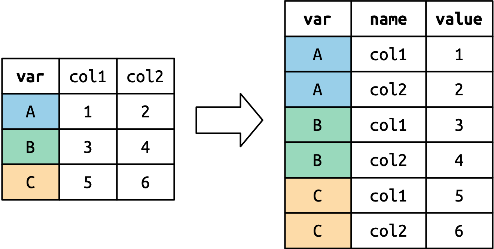
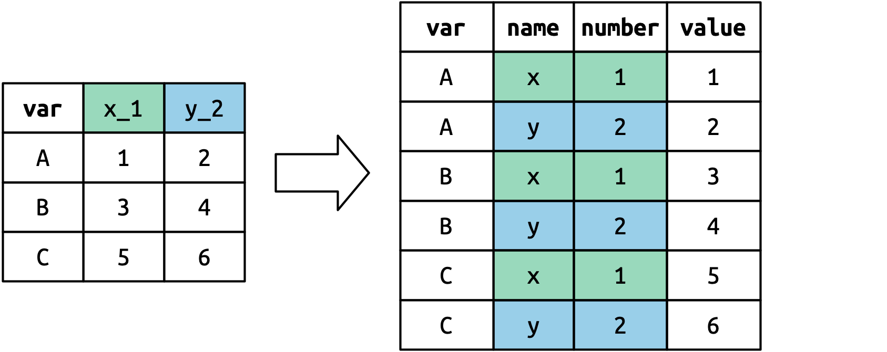

6 Data tidying
You are reading the work-in-progress second edition of R for Data Science. This chapter is largely complete and just needs final proof reading. You can find the complete first edition at https://r4ds.had.co.nz.
6.1 Introduction
“Happy families are all alike; every unhappy family is unhappy in its own way.”
— Leo Tolstoy
“Tidy datasets are all alike, but every messy dataset is messy in its own way.”
— Hadley Wickham
In this chapter, you will learn a consistent way to organize your data in R using a system called tidy data. Getting your data into this format requires some work up front, but that work pays off in the long term. Once you have tidy data and the tidy tools provided by packages in the tidyverse, you will spend much less time munging data from one representation to another, allowing you to spend more time on the data questions you care about.
In this chapter, you’ll first learn the definition of tidy data and see it applied to simple toy dataset. Then we’ll dive into the main tool you’ll use for tidying data: pivoting. Pivoting allows you to change the form of your data, without changing any of the values. We’ll finish up with a discussion of usefully untidy data, and how you can create it if needed. If you particularly enjoy this chapter and want to learn more about the underlying theory, you can learn more about the history and theoretical underpinnings in the Tidy Data paper published in the Journal of Statistical Software.
6.1.1 Prerequisites
In this chapter we’ll focus on tidyr, a package that provides a bunch of tools to help tidy up your messy datasets. tidyr is a member of the core tidyverse.
From this chapter on, we’ll suppress the loading message from library(tidyverse).
6.2 Tidy data
You can represent the same underlying data in multiple ways. The example below shows the same data organised in four different ways. Each dataset shows the same values of four variables: country, year, population, and cases of TB (tuberculosis), but each dataset organizes the values in a different way.
table1
#> # A tibble: 6 × 4
#> country year cases population
#> <chr> <int> <int> <int>
#> 1 Afghanistan 1999 745 19987071
#> 2 Afghanistan 2000 2666 20595360
#> 3 Brazil 1999 37737 172006362
#> 4 Brazil 2000 80488 174504898
#> 5 China 1999 212258 1272915272
#> 6 China 2000 213766 1280428583
table2
#> # A tibble: 12 × 4
#> country year type count
#> <chr> <int> <chr> <int>
#> 1 Afghanistan 1999 cases 745
#> 2 Afghanistan 1999 population 19987071
#> 3 Afghanistan 2000 cases 2666
#> 4 Afghanistan 2000 population 20595360
#> 5 Brazil 1999 cases 37737
#> 6 Brazil 1999 population 172006362
#> # … with 6 more rows
#> # ℹ Use `print(n = ...)` to see more rows
table3
#> # A tibble: 6 × 3
#> country year rate
#> * <chr> <int> <chr>
#> 1 Afghanistan 1999 745/19987071
#> 2 Afghanistan 2000 2666/20595360
#> 3 Brazil 1999 37737/172006362
#> 4 Brazil 2000 80488/174504898
#> 5 China 1999 212258/1272915272
#> 6 China 2000 213766/1280428583
# Spread across two tibbles
table4a # cases
#> # A tibble: 3 × 3
#> country `1999` `2000`
#> * <chr> <int> <int>
#> 1 Afghanistan 745 2666
#> 2 Brazil 37737 80488
#> 3 China 212258 213766
table4b # population
#> # A tibble: 3 × 3
#> country `1999` `2000`
#> * <chr> <int> <int>
#> 1 Afghanistan 19987071 20595360
#> 2 Brazil 172006362 174504898
#> 3 China 1272915272 1280428583These are all representations of the same underlying data, but they are not equally easy to use. One of them, table1, will be much easier to work with inside the tidyverse because it’s tidy.
There are three interrelated rules that make a dataset tidy:
- Each variable is a column; each column is a variable.
- Each observation is row; each row is an observation.
- Each value is a cell; each cell is a single value.
Figure 6.1 shows the rules visually.

Why ensure that your data is tidy? There are two main advantages:
There’s a general advantage to picking one consistent way of storing data. If you have a consistent data structure, it’s easier to learn the tools that work with it because they have an underlying uniformity.
There’s a specific advantage to placing variables in columns because it allows R’s vectorised nature to shine. As you learned in Sections @ref(mutate) and @ref(summarize), most built-in R functions work with vectors of values. That makes transforming tidy data feel particularly natural.
dplyr, ggplot2, and all the other packages in the tidyverse are designed to work with tidy data. Here are a couple of small examples showing how you might work with table1.
# Compute rate per 10,000
table1 |>
mutate(
rate = cases / population * 10000
)
#> # A tibble: 6 × 5
#> country year cases population rate
#> <chr> <int> <int> <int> <dbl>
#> 1 Afghanistan 1999 745 19987071 0.373
#> 2 Afghanistan 2000 2666 20595360 1.29
#> 3 Brazil 1999 37737 172006362 2.19
#> 4 Brazil 2000 80488 174504898 4.61
#> 5 China 1999 212258 1272915272 1.67
#> 6 China 2000 213766 1280428583 1.67
# Compute cases per year
table1 |>
count(year, wt = cases)
#> # A tibble: 2 × 2
#> year n
#> <int> <int>
#> 1 1999 250740
#> 2 2000 296920
# Visualise changes over time
ggplot(table1, aes(year, cases)) +
geom_line(aes(group = country), color = "grey50") +
geom_point(aes(color = country, shape = country)) +
scale_x_continuous(breaks = c(1999, 2000))![This figure shows the numbers of cases in 1999 and 2000 for Afghanistan, Brazil, and China, with year on the x-axis and number of cases on the y-axis. Each point on the plot represents the number of cases in a given country in a given year. The points for each country are differentiated from others by color and shape and connected with a line, resulting in three, non-parallel, non-intersecting lines. The numbers of cases in China are highest for both 1999 and 2000, with values above 200,000 for both years. The number of cases in Brazil is approximately 40,000 in 1999 and approximately 75,000 in 2000. The numbers of cases in Afghanistan are lowest for both 1999 and 2000, with values that appear to be very close to 0 on this scale.](data-tidy_files/figure-html/unnamed-chunk-5-1.png)
6.2.1 Exercises
Using prose, describe how the variables and observations are organised in each of the sample tables.
-
Sketch out the process you’d use to calculate the
ratefortable2andtable4a+table4b. You will need to perform four operations:- Extract the number of TB cases per country per year.
- Extract the matching population per country per year.
- Divide cases by population, and multiply by 10000.
- Store back in the appropriate place.
You haven’t yet learned all the functions you’d need to actually perform these operations, but you should still be able to think through the transformations you’d need.
Recreate the plot showing change in cases over time using
table2instead oftable1. What do you need to do first?
6.3 Pivoting
The principles of tidy data might seem so obvious that you wonder if you’ll ever encounter a dataset that isn’t tidy. Unfortunately, however, most real data is untidy. There are two main reasons:
Data is often organised to facilitate some goal other than analysis. For example, it’s common for data to be structured to make data entry, not analysis, easy.
Most people aren’t familiar with the principles of tidy data, and it’s hard to derive them yourself unless you spend a lot of time working with data.
This means that most real analyses will require at least a little tidying. You’ll begin by figuring out what the underlying variables and observations are. Sometimes this is easy; other times you’ll need to consult with the people who originally generated the data. Next, you’ll pivot your data into a tidy form, with variables in the columns and observations in the rows.
tidyr provides two functions for pivoting data: pivot_longer(), which makes datasets longer by increasing rows and reducing columns, and pivot_wider() which makes datasets wider by increasing columns and reducing rows. The following sections work through the use of pivot_longer() and pivot_wider() to tackle a wide range of realistic datasets. These examples are drawn from vignette("pivot", package = "tidyr"), which you should check out if you want to see more variations and more challenging problems.
Let’s dive in.
6.3.1 Data in column names
The billboard dataset records the billboard rank of songs in the year 2000:
billboard
#> # A tibble: 317 × 79
#> artist track date.ent…¹ wk1 wk2 wk3 wk4 wk5 wk6 wk7 wk8 wk9
#> <chr> <chr> <date> <dbl> <dbl> <dbl> <dbl> <dbl> <dbl> <dbl> <dbl> <dbl>
#> 1 2 Pac Baby… 2000-02-26 87 82 72 77 87 94 99 NA NA
#> 2 2Ge+her The … 2000-09-02 91 87 92 NA NA NA NA NA NA
#> 3 3 Door… Kryp… 2000-04-08 81 70 68 67 66 57 54 53 51
#> 4 3 Door… Loser 2000-10-21 76 76 72 69 67 65 55 59 62
#> 5 504 Bo… Wobb… 2000-04-15 57 34 25 17 17 31 36 49 53
#> 6 98^0 Give… 2000-08-19 51 39 34 26 26 19 2 2 3
#> # … with 311 more rows, 67 more variables: wk10 <dbl>, wk11 <dbl>, wk12 <dbl>,
#> # wk13 <dbl>, wk14 <dbl>, wk15 <dbl>, wk16 <dbl>, wk17 <dbl>, wk18 <dbl>,
#> # wk19 <dbl>, wk20 <dbl>, wk21 <dbl>, wk22 <dbl>, wk23 <dbl>, wk24 <dbl>,
#> # wk25 <dbl>, wk26 <dbl>, wk27 <dbl>, wk28 <dbl>, wk29 <dbl>, wk30 <dbl>,
#> # wk31 <dbl>, wk32 <dbl>, wk33 <dbl>, wk34 <dbl>, wk35 <dbl>, wk36 <dbl>,
#> # wk37 <dbl>, wk38 <dbl>, wk39 <dbl>, wk40 <dbl>, wk41 <dbl>, wk42 <dbl>,
#> # wk43 <dbl>, wk44 <dbl>, wk45 <dbl>, wk46 <dbl>, wk47 <dbl>, wk48 <dbl>, …
#> # ℹ Use `print(n = ...)` to see more rows, and `colnames()` to see all variable namesIn this dataset, each observation is a song. The first three columns (artist, track and date.entered) are variables that describe the song. Then we have 76 columns (wk1-wk76) that describe the rank of the song in each week. Here, the column names are one variable (the week) and the cell values are another (the rank).
To tidy this data, we’ll use pivot_longer(). After the data, there are three key arguments:
-
colsspecifies which columns need to be pivoted, i.e. which columns aren’t variables. This argument uses the same syntax asselect()so here we could use!c(artist, track, date.entered)orstarts_with("wk"). -
names_tonames of the variable stored in the column names, here"week". -
values_tonames the variable stored in the cell values, here"rank".
That gives the following call:
billboard |>
pivot_longer(
cols = starts_with("wk"),
names_to = "week",
values_to = "rank"
)
#> # A tibble: 24,092 × 5
#> artist track date.entered week rank
#> <chr> <chr> <date> <chr> <dbl>
#> 1 2 Pac Baby Don't Cry (Keep... 2000-02-26 wk1 87
#> 2 2 Pac Baby Don't Cry (Keep... 2000-02-26 wk2 82
#> 3 2 Pac Baby Don't Cry (Keep... 2000-02-26 wk3 72
#> 4 2 Pac Baby Don't Cry (Keep... 2000-02-26 wk4 77
#> 5 2 Pac Baby Don't Cry (Keep... 2000-02-26 wk5 87
#> 6 2 Pac Baby Don't Cry (Keep... 2000-02-26 wk6 94
#> 7 2 Pac Baby Don't Cry (Keep... 2000-02-26 wk7 99
#> 8 2 Pac Baby Don't Cry (Keep... 2000-02-26 wk8 NA
#> 9 2 Pac Baby Don't Cry (Keep... 2000-02-26 wk9 NA
#> 10 2 Pac Baby Don't Cry (Keep... 2000-02-26 wk10 NA
#> # … with 24,082 more rows
#> # ℹ Use `print(n = ...)` to see more rowsWhat happens if a song is in the top 100 for less than 76 weeks? Take 2 Pac’s “Baby Don’t Cry”, for example. The above output suggests that it was only the top 100 for 7 weeks, and all the remaining weeks are filled in with missing values. These NAs don’t really represent unknown observations; they’re forced to exist by the structure of the dataset1, so we can ask pivot_longer to get rid of them by setting values_drop_na = TRUE:
billboard |>
pivot_longer(
cols = starts_with("wk"),
names_to = "week",
values_to = "rank",
values_drop_na = TRUE
)
#> # A tibble: 5,307 × 5
#> artist track date.entered week rank
#> <chr> <chr> <date> <chr> <dbl>
#> 1 2 Pac Baby Don't Cry (Keep... 2000-02-26 wk1 87
#> 2 2 Pac Baby Don't Cry (Keep... 2000-02-26 wk2 82
#> 3 2 Pac Baby Don't Cry (Keep... 2000-02-26 wk3 72
#> 4 2 Pac Baby Don't Cry (Keep... 2000-02-26 wk4 77
#> 5 2 Pac Baby Don't Cry (Keep... 2000-02-26 wk5 87
#> 6 2 Pac Baby Don't Cry (Keep... 2000-02-26 wk6 94
#> # … with 5,301 more rows
#> # ℹ Use `print(n = ...)` to see more rowsYou might also wonder what happens if a song is in the top 100 for more than 76 weeks? We can’t tell from this data, but you might guess that additional columns wk77, wk78, … would be added to the dataset.
This data is now tidy, but we could make future computation a bit easier by converting week into a number using mutate() and parse_number(). You’ll learn more about parse_number() and friends in Chapter 8.
billboard_tidy <- billboard |>
pivot_longer(
cols = starts_with("wk"),
names_to = "week",
values_to = "rank",
values_drop_na = TRUE
) |>
mutate(
week = parse_number(week)
)
billboard_tidy
#> # A tibble: 5,307 × 5
#> artist track date.entered week rank
#> <chr> <chr> <date> <dbl> <dbl>
#> 1 2 Pac Baby Don't Cry (Keep... 2000-02-26 1 87
#> 2 2 Pac Baby Don't Cry (Keep... 2000-02-26 2 82
#> 3 2 Pac Baby Don't Cry (Keep... 2000-02-26 3 72
#> 4 2 Pac Baby Don't Cry (Keep... 2000-02-26 4 77
#> 5 2 Pac Baby Don't Cry (Keep... 2000-02-26 5 87
#> 6 2 Pac Baby Don't Cry (Keep... 2000-02-26 6 94
#> # … with 5,301 more rows
#> # ℹ Use `print(n = ...)` to see more rowsNow we’re in a good position to look at how song ranks vary over time by drawing a plot. The code is shown below and the result is Figure 6.2.
billboard_tidy |>
ggplot(aes(week, rank, group = track)) +
geom_line(alpha = 1/3) +
scale_y_reverse()
6.3.2 How does pivoting work?
Now that you’ve seen what pivoting can do for you, it’s worth taking a little time to gain some intuition about what it does to the data. Let’s start with a very simple dataset to make it easier to see what’s happening:
df <- tribble(
~var, ~col1, ~col2,
"A", 1, 2,
"B", 3, 4,
"C", 5, 6
)Here we’ll say there are three variables: var (already in a variable), name (the column names in the column names), and value (the cell values). So we can tidy it with:
df |>
pivot_longer(
cols = col1:col2,
names_to = "names",
values_to = "values"
)
#> # A tibble: 6 × 3
#> var names values
#> <chr> <chr> <dbl>
#> 1 A col1 1
#> 2 A col2 2
#> 3 B col1 3
#> 4 B col2 4
#> 5 C col1 5
#> 6 C col2 6How does this transformation take place? It’s easier to see if we take it component by component. Columns that are already variables need to be repeated, once for each column in cols, as shown in Figure 6.3.

The column names become values in a new variable, whose name is given by names_to, as shown in Figure 6.4. They need to be repeated once for each row in the original dataset.

The cell values also become values in a new variable, with a name given by values_to. They are unwound row by row. Figure 6.5 illustrates the process.

6.3.3 Many variables in column names
A more challenging situation occurs when you have multiple variables crammed into the column names. For example, take the who2 dataset:
who2 <- who |>
rename_with(~ str_remove(.x, "new_?")) |>
rename_with(~ str_replace(.x, "([mf])", "\\1_")) |>
select(!starts_with("iso"))
who2
#> # A tibble: 7,240 × 58
#> country year sp_m_…¹ sp_m_…² sp_m_…³ sp_m_…⁴ sp_m_…⁵ sp_m_…⁶ sp_m_65 sp_f_…⁷
#> <chr> <int> <int> <int> <int> <int> <int> <int> <int> <int>
#> 1 Afghani… 1980 NA NA NA NA NA NA NA NA
#> 2 Afghani… 1981 NA NA NA NA NA NA NA NA
#> 3 Afghani… 1982 NA NA NA NA NA NA NA NA
#> 4 Afghani… 1983 NA NA NA NA NA NA NA NA
#> 5 Afghani… 1984 NA NA NA NA NA NA NA NA
#> 6 Afghani… 1985 NA NA NA NA NA NA NA NA
#> # … with 7,234 more rows, 48 more variables: sp_f_1524 <int>, sp_f_2534 <int>,
#> # sp_f_3544 <int>, sp_f_4554 <int>, sp_f_5564 <int>, sp_f_65 <int>,
#> # sn_m_014 <int>, sn_m_1524 <int>, sn_m_2534 <int>, sn_m_3544 <int>,
#> # sn_m_4554 <int>, sn_m_5564 <int>, sn_m_65 <int>, sn_f_014 <int>,
#> # sn_f_1524 <int>, sn_f_2534 <int>, sn_f_3544 <int>, sn_f_4554 <int>,
#> # sn_f_5564 <int>, sn_f_65 <int>, ep_m_014 <int>, ep_m_1524 <int>,
#> # ep_m_2534 <int>, ep_m_3544 <int>, ep_m_4554 <int>, ep_m_5564 <int>, …
#> # ℹ Use `print(n = ...)` to see more rows, and `colnames()` to see all variable names
family <- tribble(
~family, ~dob_child1, ~dob_child2, ~name_child1, ~name_child2,
1, "1998-11-26", "2000-01-29", "Susan", "Jose",
2, "1996-06-22", NA, "Mark", NA,
3, "2002-07-11", "2004-04-05", "Sam", "Seth",
4, "2004-10-10", "2009-08-27", "Craig", "Khai",
5, "2000-12-05", "2005-02-28", "Parker", "Gracie",
)
family <- family %>%
mutate(across(starts_with("dob"), parse_date))
family
#> # A tibble: 5 × 5
#> family dob_child1 dob_child2 name_child1 name_child2
#> <dbl> <date> <date> <chr> <chr>
#> 1 1 1998-11-26 2000-01-29 Susan Jose
#> 2 2 1996-06-22 NA Mark <NA>
#> 3 3 2002-07-11 2004-04-05 Sam Seth
#> 4 4 2004-10-10 2009-08-27 Craig Khai
#> 5 5 2000-12-05 2005-02-28 Parker Gracie
who2
#> # A tibble: 7,240 × 58
#> country year sp_m_…¹ sp_m_…² sp_m_…³ sp_m_…⁴ sp_m_…⁵ sp_m_…⁶ sp_m_65 sp_f_…⁷
#> <chr> <int> <int> <int> <int> <int> <int> <int> <int> <int>
#> 1 Afghani… 1980 NA NA NA NA NA NA NA NA
#> 2 Afghani… 1981 NA NA NA NA NA NA NA NA
#> 3 Afghani… 1982 NA NA NA NA NA NA NA NA
#> 4 Afghani… 1983 NA NA NA NA NA NA NA NA
#> 5 Afghani… 1984 NA NA NA NA NA NA NA NA
#> 6 Afghani… 1985 NA NA NA NA NA NA NA NA
#> # … with 7,234 more rows, 48 more variables: sp_f_1524 <int>, sp_f_2534 <int>,
#> # sp_f_3544 <int>, sp_f_4554 <int>, sp_f_5564 <int>, sp_f_65 <int>,
#> # sn_m_014 <int>, sn_m_1524 <int>, sn_m_2534 <int>, sn_m_3544 <int>,
#> # sn_m_4554 <int>, sn_m_5564 <int>, sn_m_65 <int>, sn_f_014 <int>,
#> # sn_f_1524 <int>, sn_f_2534 <int>, sn_f_3544 <int>, sn_f_4554 <int>,
#> # sn_f_5564 <int>, sn_f_65 <int>, ep_m_014 <int>, ep_m_1524 <int>,
#> # ep_m_2534 <int>, ep_m_3544 <int>, ep_m_4554 <int>, ep_m_5564 <int>, …
#> # ℹ Use `print(n = ...)` to see more rows, and `colnames()` to see all variable namesThis dataset records information about tuberculosis data collected by the WHO. There are two columns that are already variables and are easy to interpret: country and year. They are followed by 56 columns like sp_m_014, ep_m_4554, and rel_m_3544. If you stare at these columns for long enough, you’ll notice there’s a pattern. Each column name is made up of three pieces separated by _. The first piece, sp/rel/ep, describes the method used for the diagnosis, the second piece, m/f is the gender, and the third piece, 014/1524/2535/3544/4554/65 is the age range.
So in this case we have six variables: two variables are already columns, three variables are contained in the column name, and one variable is in the cell name. This requires two changes to our call to pivot_longer(): names_to gets a vector of column names and names_sep describes how to split the variable name up into pieces:
who2 |>
pivot_longer(
cols = !(country:year),
names_to = c("diagnosis", "gender", "age"),
names_sep = "_",
values_to = "count"
)
#> # A tibble: 405,440 × 6
#> country year diagnosis gender age count
#> <chr> <int> <chr> <chr> <chr> <int>
#> 1 Afghanistan 1980 sp m 014 NA
#> 2 Afghanistan 1980 sp m 1524 NA
#> 3 Afghanistan 1980 sp m 2534 NA
#> 4 Afghanistan 1980 sp m 3544 NA
#> 5 Afghanistan 1980 sp m 4554 NA
#> 6 Afghanistan 1980 sp m 5564 NA
#> # … with 405,434 more rows
#> # ℹ Use `print(n = ...)` to see more rowsAn alternative to names_sep is names_pattern, which you can use to extract variables from more complicated naming scenarios, once you’ve learned about regular expressions in Chapter 17.
Conceptually, this is only a minor variation on the simpler case you’ve already seen. Figure 6.6 shows the basic idea: now, instead of the column names pivoting into a single column, they pivot into multiple columns. You can imagine this happening in two steps (first pivoting and then separating) but under the hood it happens in a single step because that gives better performance.

6.3.4 Data and variable names in the column headers
The next step up in complexity is when the column names include a mix of variable values and variable names. For example, take the household dataset:
# Can't find the household dataset online, sorry
#householdThis dataset contains data about five families, with the names and dates of birth of up to two children. The new challenge in this dataset is that the column names contain the names of two variables (dob, name) and the values of another (child, with values 1 and 2). To solve this problem we again need to supply a vector to names_to but this time we use the special ".value" sentinel. This overrides the usual values_to argument to use the first component of the pivoted column name as a variable name in the output.
# household |>
# pivot_longer(
# cols = !family,
# names_to = c(".value", "child"),
# names_sep = "_",
# values_drop_na = TRUE
# ) |>
# mutate(
# child = parse_number(child)
# )We again use values_drop_na = TRUE, since the shape of the input forces the creation of explicit missing variables (e.g. for families with only one child), and parse_number() to convert (e.g.) child1 into 1.
Figure 6.7 illustrates the basic idea with a simpler example. When you use ".value" in names_to, the column names in the input contribute to both values and variable names in the output.
names_to = c(".value", "id") splits the column names into two components: the first part determines the output column name (x or y), and the second part determines the value of the id column.6.3.5 Widening data
So far we’ve used pivot_longer() to solve the common class of problems where values have ended up in column names. Next we’ll pivot (HA HA) to pivot_wider(), which helps when one observation is spread across multiple rows. This seems to arise less commonly in the wild, but it does seem to crop up a lot when dealing with governmental data.
We’ll start by looking at cms_patient_experience, a dataset from the Centers of Medicare and Medicaid services that collects data about patient experiences:
#cms_patient_experience <- read.csv("Hospice_Provider_May2022")
#cms_patient_experienceAn observation is an organisation, but each organisation is spread across six rows, with one row for each variable, or measure. We can see the complete set of values for measure_cd and measure_title by using distinct():
# cms_patient_experience |>
# distinct(measure_cd, measure_title)Neither of these columns will make particularly great variable names: measure_cd doesn’t hint at the meaning of the variable and measure_title is a long sentence containing spaces. We’ll use measure_cd for now, but in a real analysis you might want to create your own variable names that are both short and meaningful.
pivot_wider() has the opposite interface to pivot_longer(): we need to provide the existing columns that define the values (values_from) and the column name (names_from):
# cms_patient_experience |>
# pivot_wider(
# names_from = measure_cd,
# values_from = prf_rate
# )The output doesn’t look quite right; we still seem to have multiple rows for each organization. That’s because, by default, pivot_wider() will attempt to preserve all the existing columns including measure_title which has six distinct observations for each organisations. To fix this problem we need to tell pivot_wider() which columns identify each row; in this case those are the variables starting with org:
# cms_patient_experience |>
# pivot_wider(
# id_cols = starts_with("org"),
# names_from = measure_cd,
# values_from = prf_rate
# )This gives us the output that we’re looking for.
6.3.6 How does pivot_wider() work?
To understand how pivot_wider() works, let’s again start with a very simple dataset:
df <- tribble(
~id, ~name, ~value,
"A", "x", 1,
"B", "y", 2,
"B", "x", 3,
"A", "y", 4,
"A", "z", 5,
)We’ll take the values from the value column and the names from the name column:
df |>
pivot_wider(
names_from = name,
values_from = value
)
#> # A tibble: 2 × 4
#> id x y z
#> <chr> <dbl> <dbl> <dbl>
#> 1 A 1 4 5
#> 2 B 3 2 NAThe connection between the position of the row in the input and the cell in the output is weaker than in pivot_longer() because the rows and columns in the output are primarily determined by the values of variables, not their locations.
To begin the process pivot_wider() needs to first figure out what will go in the rows and columns. Finding the column names is easy: it’s just the values of name.
df |>
distinct(name)
#> # A tibble: 3 × 1
#> name
#> <chr>
#> 1 x
#> 2 y
#> 3 zBy default, the rows in the output are formed by all the variables that aren’t going into the names or values. These are called the id_cols.
pivot_wider() then combines these results to generate an empty data frame:
It then fills in all the missing values using the data in the input. In this case, not every cell in the output has corresponding value in the input as there’s no entry for id “B” and name “z”, so that cell remains missing. We’ll come back to this idea that pivot_wider() can “make” missing values in Chapter 20.
You might also wonder what happens if there are multiple rows in the input that correspond to one cell in the output. The example below has two rows that correspond to id “A” and name “x”:
df <- tribble(
~id, ~name, ~value,
"A", "x", 1,
"A", "x", 2,
"A", "y", 3,
"B", "x", 4,
"B", "y", 5,
)If we attempt to pivot this we get an output that contains list-columns, which you’ll learn more about in Chapter 25:
df |> pivot_wider(
names_from = name,
values_from = value
)
#> Warning: Values from `value` are not uniquely identified; output will contain list-cols.
#> * Use `values_fn = list` to suppress this warning.
#> * Use `values_fn = {summary_fun}` to summarise duplicates.
#> * Use the following dplyr code to identify duplicates.
#> {data} %>%
#> dplyr::group_by(id, name) %>%
#> dplyr::summarise(n = dplyr::n(), .groups = "drop") %>%
#> dplyr::filter(n > 1L)
#> # A tibble: 2 × 3
#> id x y
#> <chr> <list> <list>
#> 1 A <dbl [2]> <dbl [1]>
#> 2 B <dbl [1]> <dbl [1]>Since you don’t know how to work with this sort of data yet, you’ll want to follow the hint in the warning to figure out where the problem is:
It’s then up to you to figure out what’s gone wrong with your data and either repair the underlying damage or use your grouping and summarizing skills to ensure that each combination of row and column values only has a single row.
6.4 Untidy data
While pivot_wider() is occasionally useful for making tidy data, its real strength is making untidy data. While that sounds like a bad thing, untidy isn’t a pejorative term: there are many untidy data structures that are extremely useful. Tidy data is a great starting point for most analyses but it’s not the only data format you’ll ever need.
The following sections will show a few examples of pivot_wider() making usefully untidy data for presenting data to other humans, for input to multivariate statistics algorithms, and for pragmatically solving data manipulation challenges.
6.4.1 Presenting data to humans
As you’ve seen, dplyr::count() produces tidy data: it makes one row for each group, with one column for each grouping variable, and one column for the number of observations.
diamonds |>
count(clarity, color)
#> # A tibble: 56 × 3
#> clarity color n
#> <ord> <ord> <int>
#> 1 I1 D 42
#> 2 I1 E 102
#> 3 I1 F 143
#> 4 I1 G 150
#> 5 I1 H 162
#> 6 I1 I 92
#> # … with 50 more rows
#> # ℹ Use `print(n = ...)` to see more rowsThis is easy to visualize or summarize further, but it’s not the most compact form for display. You can use pivot_wider() to create a form more suitable for display to other humans:
diamonds |>
count(clarity, color) |>
pivot_wider(
names_from = color,
values_from = n
)
#> # A tibble: 8 × 8
#> clarity D E F G H I J
#> <ord> <int> <int> <int> <int> <int> <int> <int>
#> 1 I1 42 102 143 150 162 92 50
#> 2 SI2 1370 1713 1609 1548 1563 912 479
#> 3 SI1 2083 2426 2131 1976 2275 1424 750
#> 4 VS2 1697 2470 2201 2347 1643 1169 731
#> 5 VS1 705 1281 1364 2148 1169 962 542
#> 6 VVS2 553 991 975 1443 608 365 131
#> # … with 2 more rows
#> # ℹ Use `print(n = ...)` to see more rowsThis display also makes it easy to compare in two directions, horizontally and vertically, much like facet_grid().
pivot_wider() can be great for quickly sketching out a table. But for real presentation tables, we highly suggest learning a package like gt. gt is similar to ggplot2 in that it provides an extremely powerful grammar for laying out tables. It takes some work to learn but the payoff is the ability to make just about any table you can imagine.
6.4.2 Multivariate statistics
Most classical multivariate statistical methods (like dimension reduction and clustering) require your data in matrix form, where each column is a time point, or a location, or a gene, or a species, but definitely not a variable. Sometimes these formats have substantial performance or space advantages, or sometimes they’re just necessary to get closer to the underlying matrix mathematics.
We’re not going to cover these statistical methods here, but it is useful to know how to get your data into the form that they need. For example, let’s imagine you wanted to cluster the gapminder data to find countries that had similar progression of gdpPercap over time. To do this, we need one row for each country and one column for each year:
library(gapminder)
col_year <- gapminder |>
mutate(gdpPercap = log10(gdpPercap)) |>
pivot_wider(
id_cols = country,
names_from = year,
values_from = gdpPercap
)
col_year
#> # A tibble: 142 × 13
#> country `1952` `1957` `1962` `1967` `1972` `1977` `1982` `1987` `1992` `1997`
#> <fct> <dbl> <dbl> <dbl> <dbl> <dbl> <dbl> <dbl> <dbl> <dbl> <dbl>
#> 1 Afghani… 2.89 2.91 2.93 2.92 2.87 2.90 2.99 2.93 2.81 2.80
#> 2 Albania 3.20 3.29 3.36 3.44 3.52 3.55 3.56 3.57 3.40 3.50
#> 3 Algeria 3.39 3.48 3.41 3.51 3.62 3.69 3.76 3.75 3.70 3.68
#> 4 Angola 3.55 3.58 3.63 3.74 3.74 3.48 3.44 3.39 3.42 3.36
#> 5 Argenti… 3.77 3.84 3.85 3.91 3.98 4.00 3.95 3.96 3.97 4.04
#> 6 Austral… 4.00 4.04 4.09 4.16 4.23 4.26 4.29 4.34 4.37 4.43
#> # … with 136 more rows, and 2 more variables: `2002` <dbl>, `2007` <dbl>
#> # ℹ Use `print(n = ...)` to see more rows, and `colnames()` to see all variable namespivot_wider() produces a tibble where each row is labelled by the country variable. But most classic statistical algorithms don’t want the identifier as an explicit variable; they want as a row name. We can turn the country variable into row names with column_to_rowname():
col_year <- col_year |>
column_to_rownames("country")
head(col_year)
#> 1952 1957 1962 1967 1972 1977 1982
#> Afghanistan 2.891786 2.914265 2.931000 2.922309 2.869221 2.895485 2.990344
#> Albania 3.204407 3.288313 3.364155 3.440940 3.520277 3.548144 3.560012
#> Algeria 3.388990 3.479140 3.406679 3.511481 3.621453 3.691118 3.759302
#> Angola 3.546618 3.582965 3.630354 3.742157 3.738248 3.478371 3.440429
#> Argentina 3.771684 3.836125 3.853282 3.905955 3.975112 4.003419 3.954141
#> Australia 4.001716 4.039400 4.086973 4.162150 4.225015 4.263262 4.289522
#> 1987 1992 1997 2002 2007
#> Afghanistan 2.930641 2.812473 2.803007 2.861376 2.988818
#> Albania 3.572748 3.397495 3.504206 3.663155 3.773569
#> Algeria 3.754452 3.700982 3.680996 3.723295 3.794025
#> Angola 3.385644 3.419600 3.357390 3.442995 3.680991
#> Argentina 3.960931 3.968876 4.040099 3.944366 4.106510
#> Australia 4.340224 4.369675 4.431331 4.486965 4.537005This makes a data frame, because tibbles don’t support row names2.
We’re now ready to cluster with (e.g.) kmeans():
cluster <- stats::kmeans(col_year, centers = 6)Extracting the data out of this object into a form you can work with is a challenge you’ll need to come back to later in the book, once you’ve learned more about lists. But for now, you can get the clustering membership out with this code:
cluster_id <- cluster$cluster |>
enframe() |>
rename(country = name, cluster_id = value)
cluster_id
#> # A tibble: 142 × 2
#> country cluster_id
#> <chr> <int>
#> 1 Afghanistan 4
#> 2 Albania 2
#> 3 Algeria 6
#> 4 Angola 2
#> 5 Argentina 5
#> 6 Australia 1
#> # … with 136 more rows
#> # ℹ Use `print(n = ...)` to see more rowsYou could then combine this back with the original data using one of the joins you’ll learn about in Chapter 13.
gapminder |> left_join(cluster_id)
#> Joining, by = "country"
#> # A tibble: 1,704 × 7
#> country continent year lifeExp pop gdpPercap cluster_id
#> <chr> <fct> <int> <dbl> <int> <dbl> <int>
#> 1 Afghanistan Asia 1952 28.8 8425333 779. 4
#> 2 Afghanistan Asia 1957 30.3 9240934 821. 4
#> 3 Afghanistan Asia 1962 32.0 10267083 853. 4
#> 4 Afghanistan Asia 1967 34.0 11537966 836. 4
#> 5 Afghanistan Asia 1972 36.1 13079460 740. 4
#> 6 Afghanistan Asia 1977 38.4 14880372 786. 4
#> # … with 1,698 more rows
#> # ℹ Use `print(n = ...)` to see more rows6.4.3 Pragmatic computation
Sometimes it’s just easier to answer a question using untidy data. For example, if you’re interested in just the total number of missing values in cms_patient_experience, it’s easier to work with the untidy form:
# cms_patient_experience |>
# group_by(org_pac_id) |>
# summarize(
# n_miss = sum(is.na(prf_rate)),
# n = n(),
# )This is partly a reflection of our definition of tidy data, where we said tidy data has one variable in each column, but we didn’t actually define what a variable is (and it’s surprisingly hard to do so). It’s totally fine to be pragmatic and to say a variable is whatever makes your analysis easiest.
So if you’re stuck figuring out how to do some computation, maybe it’s time to switch up the organisation of your data. For computations involving a fixed number of values (like computing differences or ratios), it’s usually easier if the data is in columns; for those with a variable number of values (like sums or means) it’s usually easier in rows. Don’t be afraid to untidy, transform, and re-tidy if needed.
Let’s explore this idea by looking at cms_patient_care, which has a similar structure to cms_patient_experience:
#cms_patient_careIt contains information about 9 measures (beliefs_addressed, composite_process, dyspena_treatment, …) on 14 different facilities (identified by ccn with a name given by facility_name). Compared to cms_patient_experience, however, each measurement is recorded in two rows with a score, the percentage of patients who answered yes to the survey question, and a denominator, the number of patients that the question applies to. Depending on what you want to do next, you may find any of the following three structures useful:
-
If you want to compute the number of patients that answered yes to the question, you may pivot
typeinto the columns:# cms_patient_care |> # pivot_wider( # names_from = type, # values_from = score # ) |> # mutate( # numerator = round(observed / 100 * denominator) # ) -
If you want to display the distribution of each metric, you may keep it as is so you could facet by
measure_abbr.# cms_patient_care |> # filter(type == "observed") |> # ggplot(aes(score)) + # geom_histogram(binwidth = 2) + # facet_wrap(vars(measure_abbr)) -
If you want to explore how different metrics are related, you may put the measure names in the columns so you could compare them in scatterplots.
# cms_patient_care |> # filter(type == "observed") |> # select(-type) |> # pivot_wider( # names_from = measure_abbr, # values_from = score # ) |> # ggplot(aes(dyspnea_screening, dyspena_treatment)) + # geom_point() + # coord_equal()
We’ll come back to this idea in Chapter 20.↩︎
tibbles don’t use row names because they only work for a subset of important cases: when observations can be identified by a single character vector.↩︎